量
(KB)
R
M
9
R
M
7


/ARM7共用*1
0x37F8000〜0x37FFFFF
(TWL/NITRO)
0x37F8000〜0x37FFFFF
(TWL)
0x3040000〜0x3047FFF
/WRAM-1

/ARM7
/DSP(データ領域)共用
/ARM7
/DSP(コード領域)共用
0x3000000〜0x303FFFF
(TWL)
0x37C0000〜0x37FFFFF
TWLには、以下のWRAMが搭載されています。表中のセルの背景色はすぐ下の図の同じ色の領域に対応しています。
| プラットフォーム | マスタープロセッサ | 容 量 (KB) |
アドレス | A R M 9 |
A R M 7 |
呼び方 |
|---|---|---|---|---|---|---|
|
ARM7専用 | 64 | 0x3800000〜0x380FFFF | × | ○ | ARM7専用WRAM |
|
ARM9 /ARM7共用*1 |
32 | (NITRO) 0x37F8000〜0x37FFFFF (TWL/NITRO) 0x37F8000〜0x37FFFFF (TWL) 0x3040000〜0x3047FFF |
× | ○ | WRAM-0 /WRAM-1 |
|
ARM9 /ARM7 /DSP(データ領域)共用 |
256 | 0x3700000〜0x373FFFF | ○ | ○ | WRAM-C |
|
ARM9 /ARM7 /DSP(コード領域)共用 |
256 | 0x3740000〜0x377FFFF | ○ | ○ | WRAM-B |
|
ARM9/ARM7共用*1 | 256 | (TWL/NITRO) 0x3000000〜0x303FFFF (TWL) 0x37C0000〜0x37FFFFF |
× | ○ | WRAM-A |
*1 この領域はARM7に割り当てているため、ハードウェア的には可能でも SDK としてはARM9への切り替えは出来ません。
WRAM-A は 4つの64KBスロットを、WRAM-BとWRAM-C は8つの32KBスロットを持っており、 それぞれを異なるプロセッサに割り当てたり、使用許可／不許可を変更することが可能です。 ハードウェアの本来の機構的には スロットの割り当てアドレスをある範囲で変更できますが、TwlSDKでは以下のアドレスで固定とします。但し、TWL専用ROM時に、WRAM-B または WRAM-C のイメージ領域を利用してより大きなARM7コンポーネントを配置することがあります(後述)。
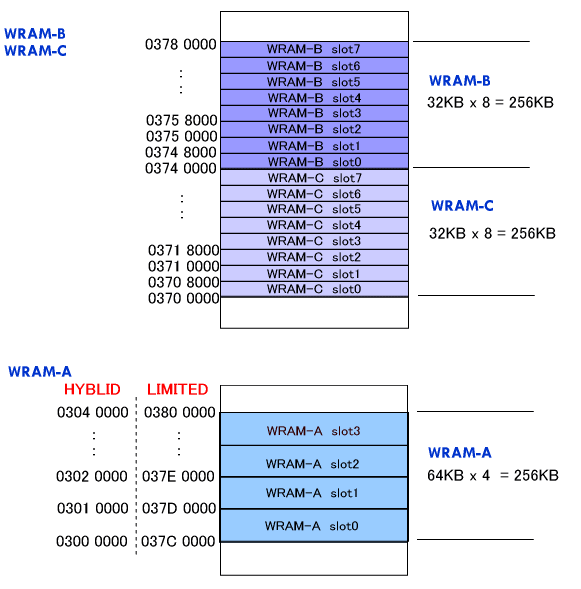
TWL専用ROMでは、WRAM-B のイメージ領域を利用してより大きな ARM7コンポーネントを配置することが可能です。
(TWL/NITRO ハイブリッドROMでも WRAM-B または WRAM-C のイメージが存在しますが、ここで説明するような
ARM7 コンポーネント置き場として使用するには不適切です。)
下の図のように WRAM-B のイメージ領域が 0x03780000〜0x037BFFFF に現れます。
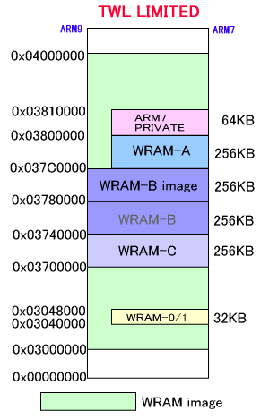
通常、ARM7コンポーネントプログラム・システム領域・スタック領域は WRAM-A(256KB) と ARM7専用WRAM(64KB) を併せた領域に配置されますので、最大サイズは合計の 320KB に制限されていました。しかし WRAM-B のイメージ領域が WRAM-A と連続した領域になっていることに注目して、WRAM-Bのイメージ領域(256KB) と WRAM-A(256KB) と ARM7専用WRAM(64KB) をこの目的で使用すれば、合計 586KB まで拡張することができることになります。ただしこの場合、WRAM-B をユーザが使用することは出来ません。
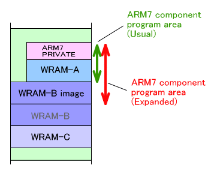
また、WRAM-B はどうしてもユーザが使用したいという場合は特別な設定により、WRAM-C のイメージを WRAM-A と連続させることで同様に通常より大きな ARM7コンポーネントプログラムの配置を行うことが出来ます。この場合、WRAM-C はユーザが使用することは出来ません。
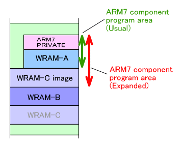
このように WRAM-B もしくは WRAM-C のイメージを用いてより大きい ARM7 コンポーネントプログラムを使用する方法に関しては
別ドキュメントを参照してください。(*まだ準備できていません)
TwlSDKでは WRAM-A 〜 WRAM-C を、ARM9、ARM7、DSP で効率よく使用するために
WRAMマネージャが用意されています。但し、WRAM-A は ARM7が用いますので割り当てを変更することは出来ません。ARM9、DSP
が使用できるのはWRAM-B と WRAM-C となります。また、WRAM-B または WRAM-C のイメージを ARM7のコンポーネントプログラム領域に割り当てている場合も、この部分の割り当てを変更することは出来ません。
このWRAMマネージャは、WRAM-A〜WRAM-C (ただしユーザが変更できない WRAM があることは前述の通りです。)
を対象にしているので、以下WRAMマネージャに関する記述中「共有WRAM」という表現が出た場合、これら3つの256KBのWRAMのみを指し示します。更にそうしたものに対しては項タイトルのところに"(WRAM-A/B/C)"
と記述しています。
WRAMマネージャは、ARM9やARM7やDSPが勝手に共有WRAM を使用しないように各プロセッサの要求を調停する役割を果たします。具体的に
WRAM マネージャが行う主な仕事は以下の通りです。
WRAMマネージャは MI_InitWramManager() で起動します。ARM9、ARM7の両方で起動されていなければなりません。この関数は、OS_Init() で呼ばれますので、通常ユーザが呼ぶ必要はありません。
初期化直後は、すべてのWRAM領域が ARM9 か ARM7 か DSP のいずれかに予約・確保されています。これは WRAMの設定を行うレジスタの情報を反映させているものです。WRAMの各スロットはレジスタ上では必ずどこかの所有となるというハードウェアの仕様なので、「どこにも確保されていない」という状態である判断が(初期化直後は)出来ないのでこのようになっています。必要ならば解放したり予約キャンセルを行ってください。
WRAM マネージャに対し、プロセッサを指定して共有WRAM スロットを予約することが出来ます。予約したWRAMスロットは、指定のプロセッサ用に確保することしか出来ません。予約は共有WRAMの種類と、サイズの指定によって行います。
予約先を指定しない場合、MI_ReserveWram() または MI_ReserveWram_A()、MI_ReserveWram_B()、MI_ReserveWram_C() によって予約を行うことができます。また、スロットを指定する場合は、関数は
MI_ReserveWramSlot() または MI_ReserveWramSlot_A()、MI_ReserveWramSlot_B()、MI_ReserveWramSlot_C() です。
すでに他のプロセッサ用に予約されている領域や、使用されている領域は予約の対象となりません。
(例)
WRAM-B、WRAM-C が全く確保されていなく、予約されていない状態であるとします。
WRAM-B の中から、場所を指定せずに128KB を ARM9 に、64KB を DSP に、32KB
を ARM7 に予約します。
|
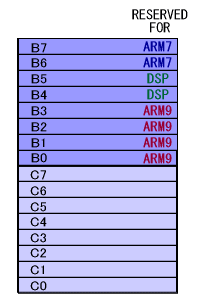
(例)
WRAM-B、WRAM-C が全く確保されていなく、予約されていない状態であるとします。
WRAM-B の中から、スロット4から128KB を ARM9 に、スロット0から64KB を DSP
に、スロット2から 32KB を ARM7 に予約します。
|
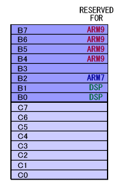
共有WRAMスロットの予約をキャンセルすることが出来ます。 そのスロットが使用されていても内部の予約情報を書き換えるだけなので現在の内容に影響なく予約キャンセルが行われます。
指定のWRAMの中の指定のプロセッサ用に予約されている領域は MI_CancelWram() または MI_CancelWram_A()、MI_CancelWram_B()、MI_CancelWram_C() です。範囲を指定する場合は MI_CancelWramSlot() または MI_CancelWramSlot_A()、MI_CancelWramSlot_B()、MI_CancelWramSlot_C() です。
(例)
WRAM-B の中の、ARM9に予約していたWRAMスロットをキャンセルします。
|
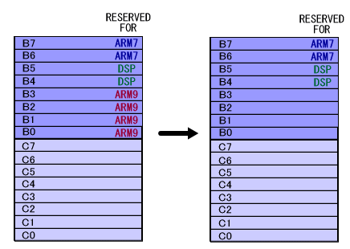
(例)
WRAM-B の中の、スロット1から128KB分のうち、ARM9に予約していたWRAMスロットをキャンセルします。
|
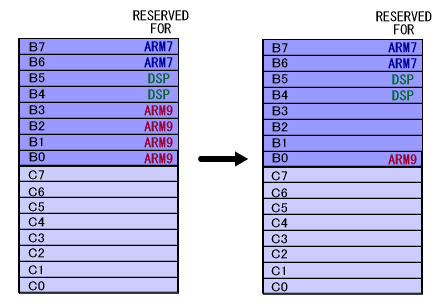
WRAM領域が必要になった場合、WRAM マネージャに対し割り当てを要求することが出来ます。
WRAM-A に対しては 64KB 単位で、WRAM-B、WRAM-C に対しては 32KB 単位で WRAM
を確保することが出来ます。共有WRAMサイズを指定すると、そのWRAM のスロット番号の出来るだけ小さいほうから連続した指定サイズ分のWRAMを確保しようとします。
まだ使用されていなく、どこからも予約されていないか、指定のプロセッサ用に予約されているスロットから確保します。
範囲を指定しない場合、関数は MI_AllocWram() または MI_AllocWram_A()、MI_AllocWram_B()、MI_AllocWram_C() です。範囲を指定して確保する場合は MI_AllocWramSlot() または MI_AllocWramSlot_A()、MI_AllocWramSlot_B()、MI_AllocWramSlot_C() となります。
(例)
WRAM-B の中から 96KB を ARM9 に確保します。
|
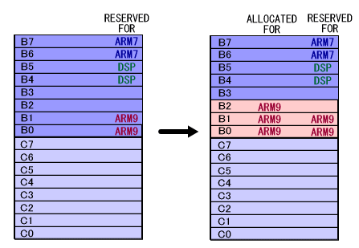
(例)
WRAM-B の中から スロット2からの64KB を ARM9 に確保します。
|
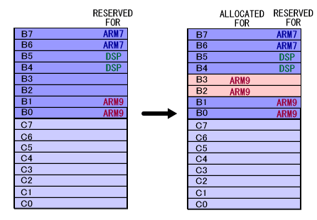
(例)
WRAM-B の中から スロット2からの96KB を ARM9 に確保します。
|
下の図の場合、WRAM-B のスロット２から96KBをARM9 に確保できません。
なぜなら、スロット4が DSP に予約されているからです。
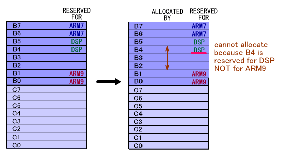
WRAM マネージャから割り当てられた共有WRAM を解放することが出来ます。但しあるWRAM
が解放されても、そのWRAMの予約情報はキャンセルされることはありません。
指定のWRAMの中の指定のプロセッサに割り当てられている領域を解放するのは
MI_FreeWram()または MI_FreeWram_A()、MI_FreeWram_B()、MI_FreeWram_C()です。範囲を指定して解放する場合は MI_FreeWramSlot()または MI_FreeWramSlot_A()、MI_FreeWramSlot_B()、MI_FreeWramSlot_C()です。
(例)
WRAM_B の中の、ARM9 用に確保したWRAM領域を解放します。
|
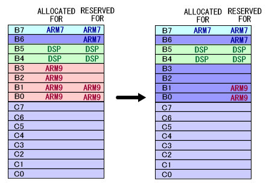
(例)
WRAM_B の中の、スロット1から128KB分のうち、ARM9 用に確保したWRAM領域を解放します。
|
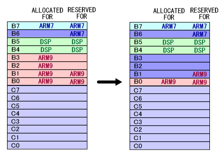
確保しているWRAMスロットを、現在の設定とは別のプロセッサ用に切り替えます。
関数は MI_SwitchWram()または MI_SwitchWram_A()、MI_SwitchWram_B()、MI_SwitchWram_C()です。領域を指定して切り替える場合は MI_SwitchWramSlot()または MI_SwitchWramSlot_A()、MI_SwitchWramSlot_B()MI_SwitchWramSlot_C()です。
(例) WRAM-B の中の、ARM9 に割り当てられている領域を DSP 用に切り替えます。
|
下の図で、スロット0 と スロット1 はARM9 に予約されていますが、割り当てるプロセッサが変化しても、予約プロセッサは変わりません。
(予約は、あくまで領域を確保するときの判定に使用されるのみです)
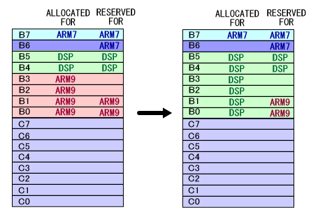
(例)
WRAM-B の中の、スロット2から128KB 分のうち、ARM9 に割り当てられている領域を
DSP 用に切り替えます。
|
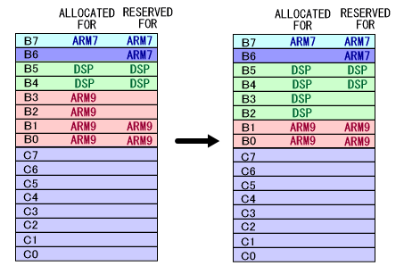
共有WRAMの現在の設定を取得するため、以下の関数が用意されています。
これらはIOレジスタの値を読むことで状態を取得しています。
MI_GetWramBankMaster() 指定のWRAMスロットのマスタープロセッサ取得
MI_GetWramBankEnable() 指定のWRAMスロットにアクセス可能かどうかを取得
MI_GetWramBankOffset() 指定のWRAMスロットのオフセット取得
MI_GetWramMapStart() 指定のWRAMの開始マッピングアドレス取得
MI_GetWramMapEnd() 指定のWRAMの終了マッピングアドレス取得
MI_GetWramMapImage() 指定のWRAMのイメージ領域出現設定取得
MI_IsWramSlotLocked() 指定のWRAMスロットがロックされているかどうかを取得
WRAMマネージャが保持している管理情報を取得するために以下の関数が用意されています。
MI_IsWramSlotUsed() 指定のWRAMスロットがすでに確保されているかを取得
MI_GetWramReservation() 指定のWRAMスロットがどのプロセッサに予約されているかを取得
MI_GetAllocatableWramSlot() 指定のプロセッサが確保可能なWRAMのスロット情報をまとめて取得
MI_GetFreeWramSlot() 予約も確保もされていないフリーなWRAMのスロット情報をまとめて取得
MI_GetUsedWramSlot() どこかのプロセッサから確保されているWRAMのスロット情報をまとめて取得
現在の割り当てを知るために、デバッグ用の関数として MI_DumpWramList(), MI_DumpWramListAll() が用意されています。
この関数は FINALROM では何も行いません。
2008/03/03 WRAM のロック関数説明を削除
2008/01/23 WRAMマッピング図修正
2007/08/09 初版